To be может образовывать отрицательные, вопросительные и утвердительные предложения без помощи других глаголов, причем как в настоящем, так и в прошедшем времени.
Глагол to be в настоящем времени (Present Simple)
В настоящем времени у to be есть три формы: am, is, are. Новички часто совершают ошибку, когда думают, что to be, am, is, are – 4 самостоятельных глагола. Это не так. Am, is, are – формы глагола to be и никак иначе.
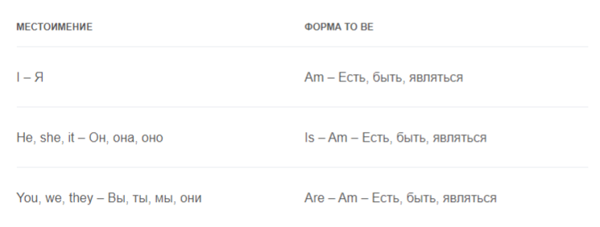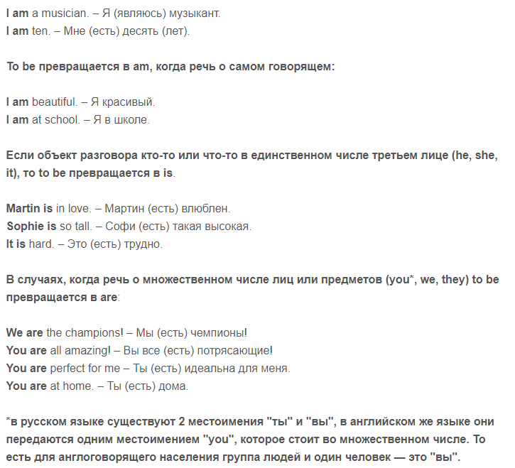
Краткая форма глагола to be в настоящем времени
Чаще всего, если в предложении используется to be с личными местоимениями, используются сокращения.
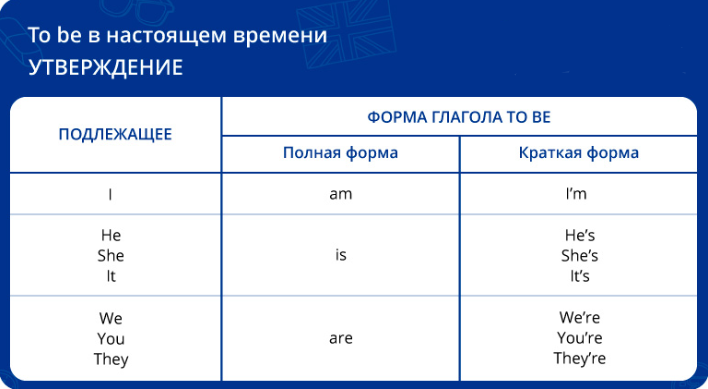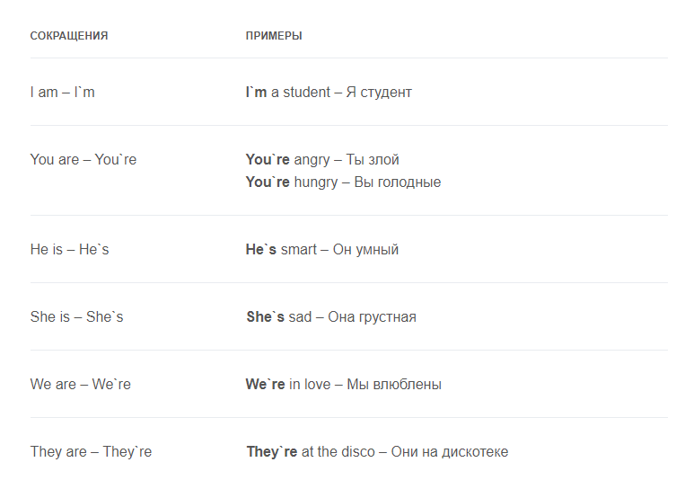
Отрицательная форма глагола to be в настоящем времени
В предложениях с отрицанием сразу после to be идет частичка not. Их очень часто объединяют для удобства, не объединяются они только в случае с I am. Тут возможен только вариант I`m not.
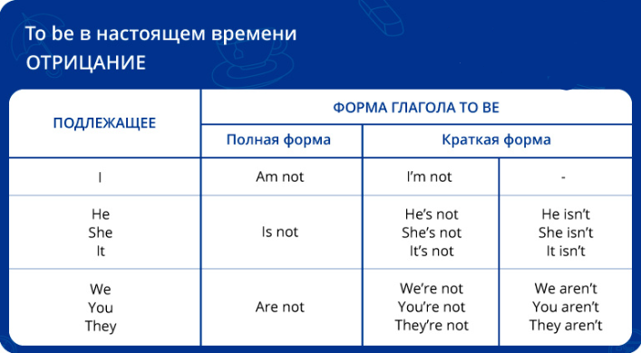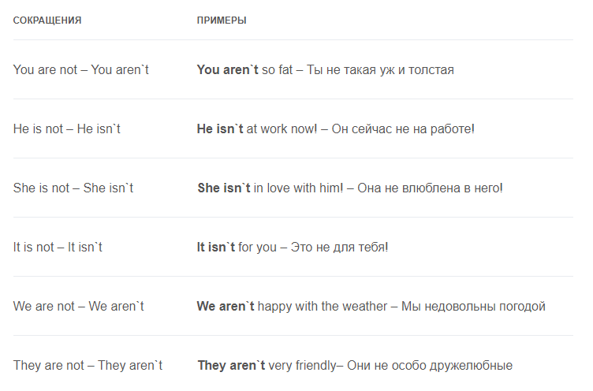
Вопросительная форма глагола to be в настоящем времени
Вопросы с to be строятся довольно легко, нужно просто перенести этот глагол в любой его форме в начало предложения. Если нужно использовать вопросительные слова, например: where, who, what и тому подобное – to be ставится после такого слова.
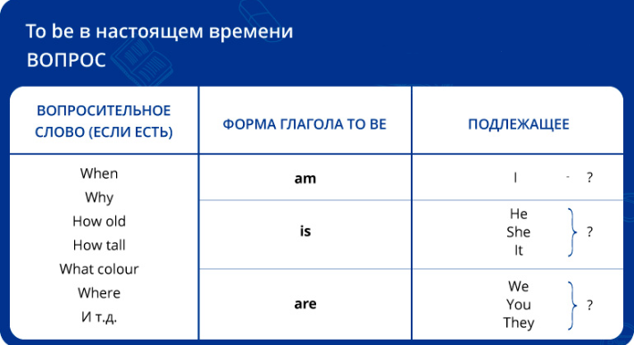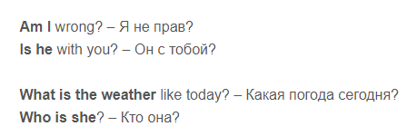
To be в прошедшем времени (Past Simple)
Если мы говорим о действиях в прошлом и использует to be, то этот глагол превращается в was или were.
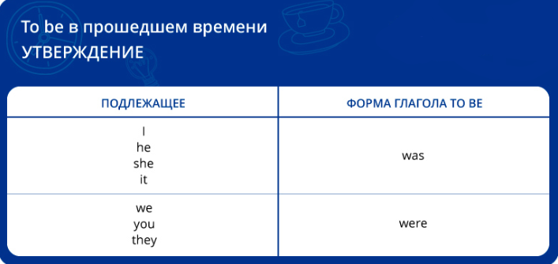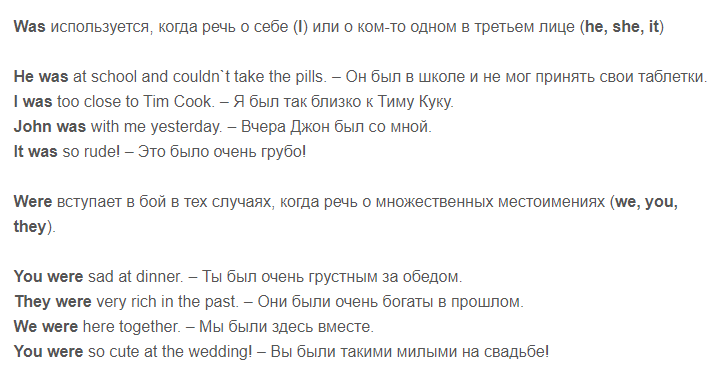
Отрицательная форма to be в прошедшем времени
Как и в настоящем времени, для образования отрицательной формы to be в прошлом, достаточно просто добавить not. Were not и was not очень часто сокращают как weren`t и wasn`t.
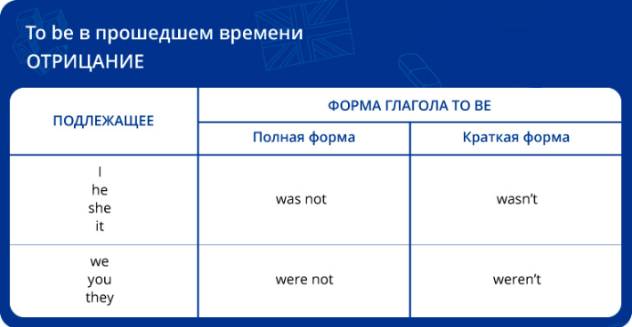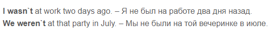
Вопросительная форма to be в прошедшем времени
Здесь алгоритм тот же, что и в настоящем времени: переносите форму to be в начало предложения, если вопросительного слова нет. Если есть when, what, who и тому подобное – ставьте to be после него.
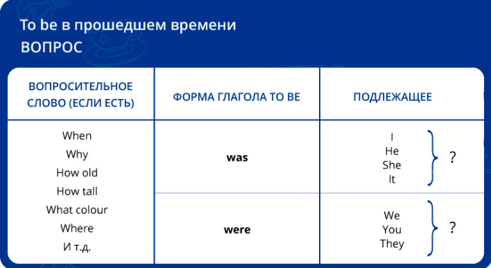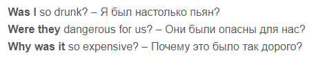
To be в будущем времени (Future Simple)
Ничего особенного в этом случае нет. По тем же правилам to be используется с модальными глаголами will.
После will глагол всегда ставится в инфинитиве, соответственно глагол to be в будущем времени будет звучать как will be.
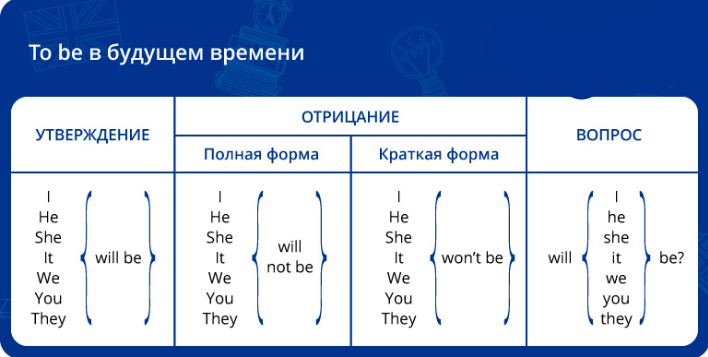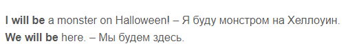
Так же to be используется в повелительном наклонении, например:
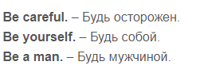